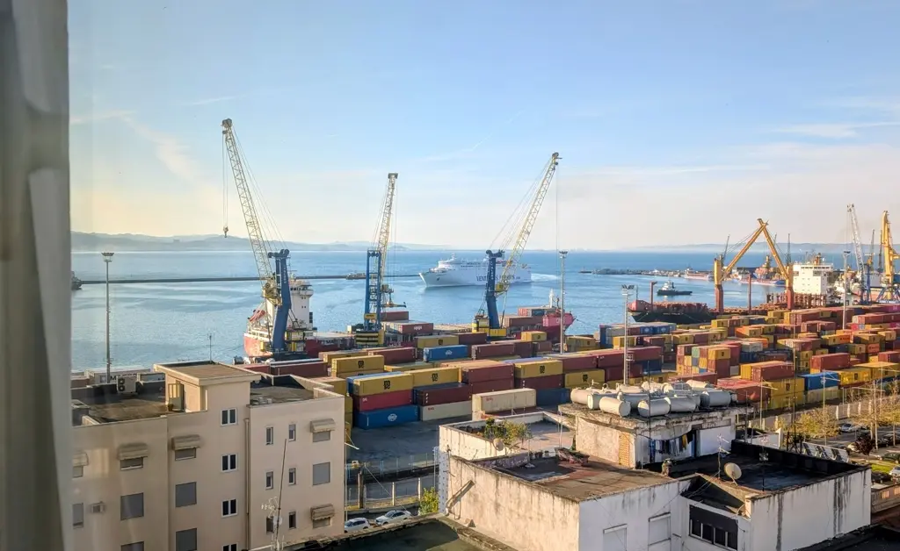

From Manila to Tirana
The Filipino "Pinoy" Spirit Taking Root in Albania

In recent years, Albania has transformed into an unexpected but vibrant hotspot for Philippine working immigrants seeking new horizons in the Balkans. As many young Albanians head to Western Europe, a significant labor gap has opened up, and the "Pinoy" community is stepping in to fill it with their world-renowned work ethic. Currently, thousands of Filipinos call the "Land of the Eagles" home, working in diverse sectors ranging from high-end hospitality to specialized beauty services.
The community has even established its own spiritual and social anchor, the Agape International church in Tirana, where they gather every Sunday to share news and a taste of home. While the transition offers better economic prospects, it isn't always a walk in the park—or a day at the beach in Boracay. Workers often face a steep learning curve with the Shqip language and the occasionally biting Balkan winters, which are a far cry from Manila's humidity.
There have also been concerning reports of recruitment scams and employer disputes, highlighting the need for the stronger bilateral labor ties currently being discussed between Manila and Tirana in 2026. Despite these hurdles, the general sentiment remains positive, with many immigrants praising the hospitality and kindness of the Albanian people. For many, Albania serves as a strategic "gateway to Europe," offering a manageable cost of living compared to more expensive EU neighbors.
Ultimately, this cultural exchange is a two-way street: while Filipinos find stability and adventure, Albanian businesses gain the reliable, professional talent necessary to keep their booming economy afloat. The presence of Philippine immigrants is truly enriching the local culture, proving that the global Filipino spirit can thrive even in the heart of the Mediterranean.